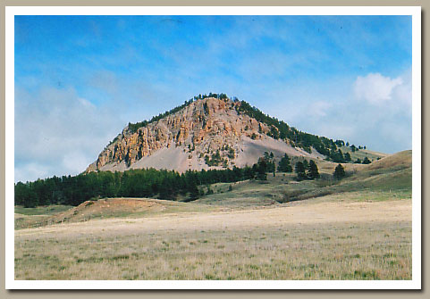

Welcome / Hunting Methods
How We Hunt
Terrain & Hunting Methods
Spot-and-stalk hunts on private working ranches with exclusive access — limited hunters, mature animals, fair chase.
Welcome / Hunting Methods
How We Hunt
Spot-and-stalk hunts on private working ranches with exclusive access — limited hunters, mature animals, fair chase.
Private Ground
All of the property we hunt in both Wyoming and South Dakota is private working ranches that Western Gateway Outfitters holds the exclusive hunting rights to. By strictly limiting the number of hunters on each property and letting animals mature, the hunting is second to none.
The antelope country varies from flat to moderately rough. The mule deer country is moderately rough to extremely rough — open country as well as brushy finger draws and heavily timbered ponderosa pine hillsides. For Merriam's turkeys, whitetails and elk we hunt ponderosa pine and oak draws, deep canyons, and hills that roll out into more open farm and ranch country.
 Mule deer country
Mule deer country
Our Method
The primary method is spot-and-stalk — the exception being archery whitetail hunts, done from ground blinds and tree stands. Four-wheel-drive trucks get us around the ranches, but all hunting is done on foot. The better your physical condition, the better your odds for a real trophy — though with the amount of land and varied terrain we hunt, we can cater to most hunters.

